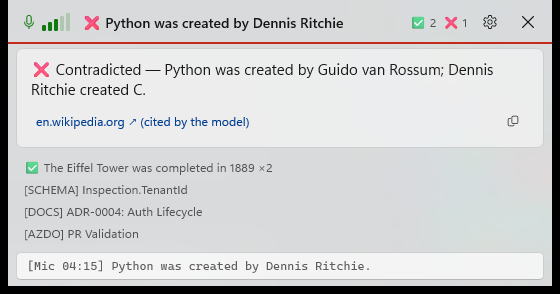
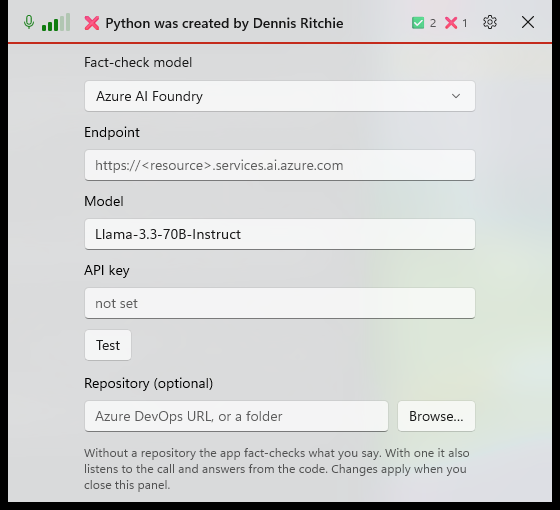
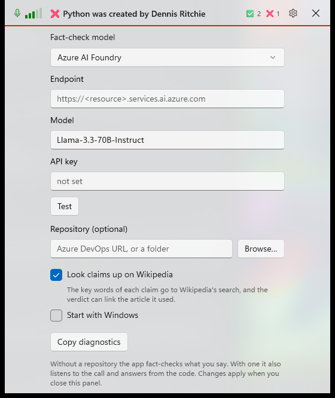

Ratings, recap, You/Them, Wikipedia sources, tray
Debug build with --demo (sample cards, no audio), captured with PrintWindow. "Before" is commit 5ec6071; "after" is the working tree on 2026-10-19.
The demo now runs with call audio on, so the speaker badge appears. Its focus card has a looked-up source and a 👍.
The HUD
Before

After
 1
2
3
4
5
6
1
2
3
4
5
6
- Looked-up source. The claim was searched on Wikipedia and the model cited one of the fetched articles, so the link says
(looked up). A URL the model wrote itself still says(cited by the model). - Who said it. With call audio on, each card carries a
YouorThembadge. In Simple mode (microphone only) there is no badge. - 👍 / 👎. Was the card right? The chosen one turns green or red, and pressing it again clears it. Ratings go into the session log, and the tally's tooltip shows the last 7 days (👍 24 👎 2 (92% right)).
- Put away. ✕ dismisses the card; the newest line in the history becomes the main card. Copy is unchanged.
- You / Them in the transcript.
[Mic 04:15]became04:15 You:, with your lines in the accent colour and the call's in the normal text colour. - Recap. Writes a Markdown recap of the current conversation (summary, decisions, action items, open questions, then the fact checks and transcript), copies it, and shows a card that opens the file. Hotkey Ctrl+Alt+S.
Settings
Before

After

7 8 9- Look claims up on Wikipedia (on by default). The line under it changes with the box, to say what leaves the PC.
- Start with Windows writes or removes the
HKCU\…\Runentry. The tray menu has the same switch. - Copy diagnostics zips the last week of logs,
crash.log,settings.jsonand a machine description into%TEMP%, puts the zip on the clipboard and shows it in Explorer. Transcripts and keys are never included.
New app icon
Used for the exe, the window, the tray and Setup.exe. Before this change the app had no icon of its own. The tray menu (Hide/Show, Mute, Recap this call, Open the sessions folder, Start with Windows, Check for updates, Quit) only opens on a real right-click, and these screenshots are taken without sending any input, so it is not shown here.